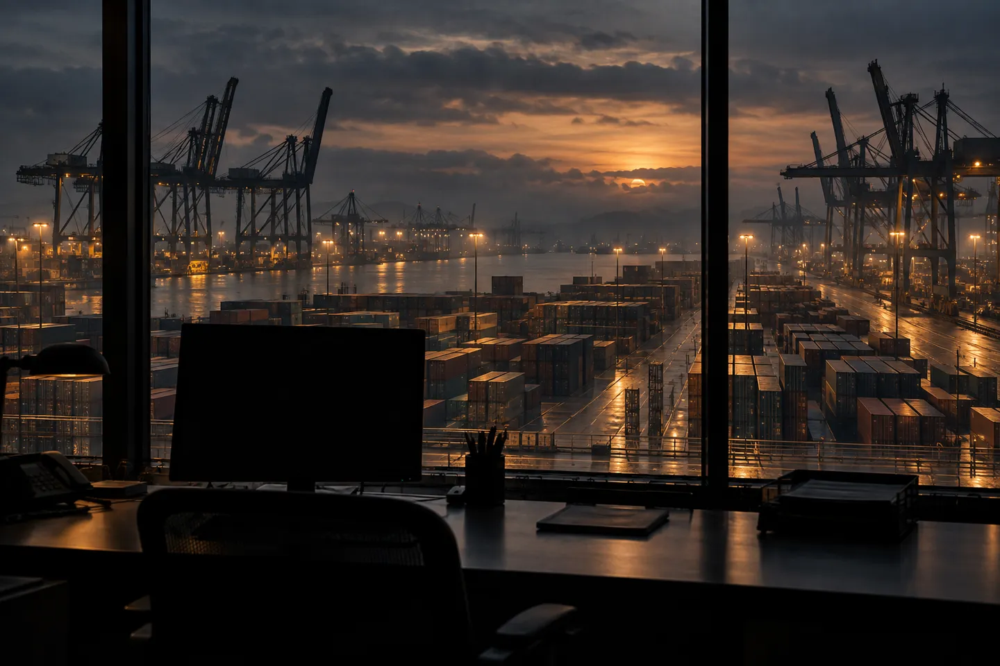

<!doctype html><html lang="pt-BR"><head><meta charset="utf-8"><meta name="viewport" content="width=device-width,initial-scale=1"><title>NotPetya · materiais de divulgação</title><style>
*{box-sizing:border-box}body{margin:0;background:#0e100d;color:#eee8d9;font-family:Arial,sans-serif}a{color:#e3c57e}main{max-width:1200px;margin:auto;padding:48px 24px}h1,h2{font-family:Georgia,serif;font-weight:400}.gallery{display:grid;grid-template-columns:repeat(auto-fit,minmax(200px,1fr));gap:24px}.gallery img{width:100%;height:auto}.links{display:flex;gap:24px;flex-wrap:wrap;margin:32px 0}.piece{position:relative;overflow:hidden;width:1080px;height:1350px;padding:80px;background:#10120f;display:flex;flex-direction:column}.piece.vertical{height:1920px;padding-top:120px;padding-bottom:180px}.brand{font:700 32px/1 Arial,sans-serif;letter-spacing:8px;color:#ddbe76;display:flex;justify-content:space-between}.meta{font:24px/1.5 'Courier New',monospace;color:#ddbe76;letter-spacing:2px;margin-top:60px}.piece h1{font-size:112px;line-height:1.02;letter-spacing:-3px;margin:30px 0 34px;max-width:850px;position:relative}.piece p{font:32px/1.55 Arial,sans-serif;color:#ccc5b6;max-width:840px;margin:0;position:relative}.piece .body{margin-top:auto;position:relative;padding-top:50px}.piece .credit{font:20px/1.5 Arial,sans-serif;color:#bcb3a2;position:relative;margin-top:28px}.piece footer{position:relative;border-top:1px solid #766039;padding-top:26px;margin-top:46px;font:24px/1.5 Arial,sans-serif;display:flex;justify-content:space-between;gap:20px;color:#dfc585}.piece .photo{position:absolute;inset:0;width:100%;height:100%;object-fit:cover;opacity:.68}.piece .shade{position:absolute;inset:0;background:linear-gradient(#080a089c 0%,#080a0850 35%,#080a08 88%)}.piece>*:not(.photo):not(.shade){z-index:1}.piece.paper{background:#e9e1cf;color:#151913}.piece.paper .brand,.piece.paper .meta,.piece.paper footer{color:#705421}.piece.paper p{color:#414338}.piece.paper .credit{color:#59594d}.piece.paper h1{font-size:104px}.big{font:105px/1 Georgia,serif;color:#e3c77e;margin:32px 0}.diagram{width:100%;margin:50px 0 20px}.diagram text{fill:#ebe3d1;font:28px Arial,sans-serif}.diagram path{stroke:#bda469;stroke-width:3;fill:none}.diagram rect{fill:#23271d;stroke:#6a6146;stroke-width:2}.document{border-top:3px solid #9e7c3d;border-bottom:1px solid #9e7c3d;padding:36px 0;margin-top:30px;font:32px/1.6 Georgia,serif}.piece.vertical h1{font-size:126px;margin-top:70px}.piece.vertical .meta{margin-top:120px}.piece.vertical p{font-size:39px;line-height:1.55}.piece.vertical .body{margin-top:auto}.piece.vertical .diagram{margin-top:80px}.piece.vertical footer{font-size:27px;margin-top:64px}.piece.vertical .credit{font-size:24px}.piece .direct-link{font:26px/1.6 'Courier New',monospace;overflow-wrap:anywhere;color:#dfc585}.piece.paper .direct-link{color:#705421}
</style></head><body><div id="output"></div><script>
var dossier='https://edy075.github.io/WAR_ROOM/?tab=story#dossier-notpetya';
var copies=[
 {meta:'27 JUN 2017 · UCRÂNIA / GLOBAL',title:'NotPetya.<br>Quando a rede parou.',body:'Um ataque destrutivo atravessou redes, fronteiras e operações do mundo físico.',photo:true,credit:'Imagem: reconstituição ilustrativa gerada por IA. Não é arquivo do ataque.'},
 {meta:'ORIGEM · CADEIA DE FORNECIMENTO',title:'A confiança foi o ponto de entrada.',body:'A Microsoft observou o processo de atualização do M.E.Doc iniciando infecções na Ucrânia.',paper:true,document:'O software esperado para manter a operação tornou-se um vetor de comprometimento.',credit:'Fonte: Microsoft Defender Security Research Team, 27/06/2017. Resumo editorial.'},
 {meta:'PROPAGAÇÃO · MOVIMENTO LATERAL',title:'O alcance ultrapassou a origem.',body:'Credenciais, PsExec, WMI e exploração de SMB ampliaram a propagação. A Microsoft observou infecções em outros 64 países.',diagram:true,credit:'Fonte: Microsoft, 2017. Diagrama esquemático; não representa rotas individuais comprovadas.'},
 {meta:'IMPACTO · UM RECORTE DOCUMENTADO',title:'O dano saiu das telas.',body:'Perdas entre três vítimas citadas pelo DOJ: saúde, logística e indústria farmacêutica. Esse recorte não é o total global.',big:'Quase US$ 1 bi',credit:'Fonte: Departamento de Justiça dos EUA, acusação anunciada em 19/10/2020.'},
 {meta:'FONTES · PILOTO EM SEIS CAPÍTULOS',title:'Siga a evidência.',body:'Abertura. Origem. Propagação. Impacto. Resposta. Fontes. Uma narrativa completa para ler, explorar e verificar.',photo:true,credit:'Fontes: Microsoft (2017), governo britânico / NCSC (2018), DOJ (2020). Imagem reconstituída por IA.'}
];
var teaser=[
 {meta:'27 JUN 2017',title:'Uma atualização.<br>Uma ruptura.',body:'NotPetya começa na Ucrânia. O efeito atravessa fronteiras.',photo:true,credit:'Reconstituição ilustrativa por IA. Contexto visual, não arquivo do ataque.'},
 {meta:'ORIGEM · M.E.DOC',title:'A confiança foi o vetor.',body:'Um canal legítimo de atualização inicia infecções observadas pela Microsoft.',paper:true,credit:'Microsoft · análise técnica contemporânea · 2017'},
 {meta:'PROPAGAÇÃO',title:'Uma rede.<br>Muitas fronteiras.',body:'Credenciais e movimento lateral. Infecções observadas em outros 64 países.',diagram:true,credit:'Microsoft, 2017. Esquema de alcance, sem rotas comprovadas.'},
 {meta:'IMPACTO',title:'O dano saiu das telas.',body:'Saúde, logística e indústria atingidas. Quase US$ 1 bilhão entre três vítimas citadas pelo DOJ.',credit:'DOJ, 2020. Recorte documentado; não é o total mundial.'},
 {meta:'RESPOSTA · 2018 / 2020',title:'Reconstruir.<br>Investigar.<br>Atribuir.',body:'Atribuição pública do Reino Unido. Acusações anunciadas nos EUA. Cada afirmação ligada à sua fonte.',paper:true,credit:'Governo britânico / NCSC (2018) · DOJ (2020)'},
 {meta:'WAR ROOM · PILOTO NOTPETYA',title:'Leia o dossiê.',body:'Seis capítulos. História completa. Referências abertas. A experiência funciona sem áudio.',photo:true,credit:'Imagem reconstituída por IA. Teaser editorial sem narração.'}
];
function diagram(){return '<svg class="diagram" viewBox="0 0 900 300" role="img" aria-label="Origem na Ucrânia e alcance internacional"><rect x="10" y="90" width="320" height="120"/><text x="50" y="160">M.E.Doc / Ucrânia</text><path d="M330 150H440 M440 150Q490 30 560 50 M440 150H560 M440 150Q490 270 560 250"/><rect x="560" y="5" width="320" height="80"/><rect x="560" y="110" width="320" height="80"/><rect x="560" y="215" width="320" height="80"/><text x="590" y="55">Redes corporativas</text><text x="590" y="160">Operações globais</text><text x="590" y="265">Serviços afetados</text></svg>';}
var params=new URLSearchParams(location.search),type=params.get('type')||'carousel',index=Number(params.get('slide')||0);
if(params.has('slide')){var c=(type==='teaser'?teaser:copies)[index];document.getElementById('output').innerHTML='<article class="piece '+(type==='teaser'?'vertical ':'')+(c.paper?'paper':'')+'">'+(c.photo?'<div class="shade"></div>':'')+'<div class="brand"><span>WAR ROOM</span><span>DOSSIÊ 08</span></div><div class="meta">'+c.meta+'</div><h1>'+c.title+'</h1>'+(c.big?'<div class="big">'+c.big+'</div>':'')+(c.diagram?diagram():'')+(c.document?'<div class="document">'+c.document+'</div>':'')+'<div class="body"><p>'+c.body+'</p><div class="credit">'+c.credit+'</div></div><footer><span>NOTPETYA · '+(type!=='carousel'?'PILOTO DOCUMENTAL':(index+1)+' / 5')+'</span><span>LEIA E VERIFIQUE</span></footer>'+((type==='cover'||index===(type==='teaser'?5:4))?'<a class="direct-link" href="'+dossier+'">edy075.github.io/WAR_ROOM/<br>?tab=story#dossier-notpetya</a>':'')+'</article>';}else{document.getElementById('output').innerHTML='<main><p>WAR ROOM · DOSSIÊ 08</p><h1>NotPetya — materiais do piloto</h1><p>Capa, carrossel de cinco páginas e teaser vertical de 36 segundos. Arquivos para revisão; nenhuma publicação realizada.</p><div class="links"><a href="'+dossier+'">Link do dossiê (versão pública ainda anterior à branch)</a><a href="../../../index.html?tab=story#dossier-notpetya">Abrir piloto local</a><a href="cover.png">Capa PNG</a><a href="teaser-vertical.mp4">Teaser MP4</a><a href="../../../docs/NOTPETYA_STORYBOARD.md">Storyboard e roteiro</a></div><div class="gallery">'+copies.map(function(c,i){return '<figure><a href="carousel-'+(i+1)+'.png">/g,' ')+'"></a><figcaption>Página '+(i+1)+' · <a href="?slide='+i+'">Fonte editável no navegador</a></figcaption></figure>';}).join('')+'</div><h2>Créditos</h2><p>Identidade e diagrama: WAR ROOM. Porto: reconstituição ilustrativa por IA (image_gen). Fontes históricas no dossiê e no storyboard. Teaser sem narração ou trilha; todo o conteúdo é legível. Não há áudio fingido ou botão de reprodução sem mídia real.</p></main>';}
</script></body></html>
